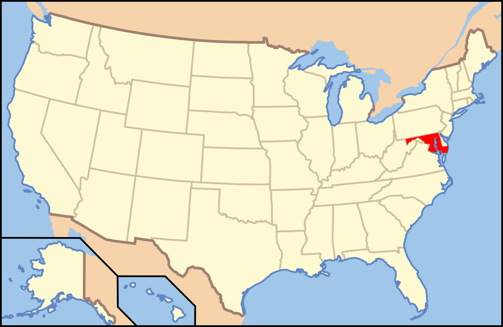

Maryland

1. Maryland Heights - Harpers Ferry National Historical Park

mbell/Moment Collection via Getty Images
| Grade: Moderate |
|---|
| More Images |
| Trail Link |
2. Billy Goat Trail - Chesapeake and Ohio Canal National Historic Park

Douglas Rissing/iStock via Getty Images Plus
| Grade: Moderate |
|---|
| More Images |
| Trail Link |
3. Annapolis Rock - South Mountain State Park

TYangMD/iStock via Getty Images Plus
| Grade: Moderate |
|---|
| More Images |
| Trail Link |
4. Liberty Dam - Patapsco Valley State Park

Paul/Google Local
| Grade: Short |
|---|
| More Images |
| Trail Link |